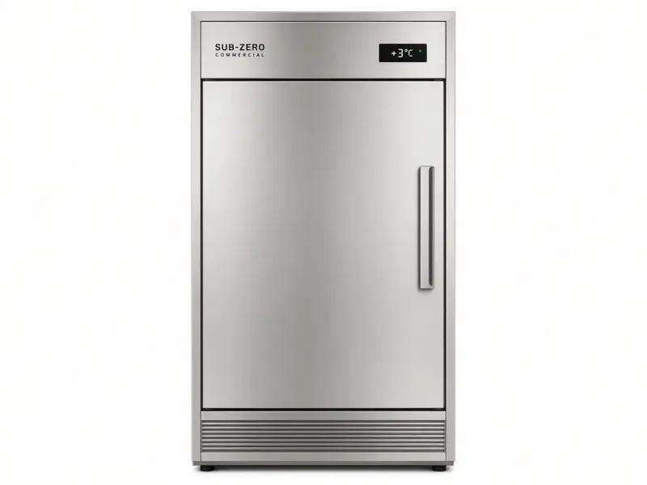

Commercial refrigeration only - 24/7 emergency - 25 mile radius
Sub-Zero fridge repair for commercial kitchens and professional sites in North London and London. 24/7 emergency. Light grey hero, not a black page.

Sub-Zero refrigeration is built as a luxury, high-capacity fridge. In London we see Sub-Zero columns and under-counters in private members clubs, hotel suites used as production kitchens, show kitchens and high-end restaurants that specified the brand. Cold Direct offers Sub-Zero fridge repair as a commercial-only service. We cover North London and a 25 mile radius. We do not run a domestic house-call diary for private kitchens unless the site is a commercial account.
Common Sub-Zero fridge faults: one compartment warmer than the other, ice on the evaporator, a noisy condenser, a control that has lost its programme after a power cut, a door that will not seal, or an alarm that will not clear. Dual evaporators and sealed systems on Sub-Zero cabinets need a careful diagnosis. We use a temperature probe on air and product, not a guess from the panel. Those figures matter if an EHO or a hotel engineer asks what the fridge was doing when you called us.
The hero on this page is light grey. Buttons use luxury dark grey #2C3E50. The body of the site stays white. We will not put your staff in front of a black screen. 24/7 emergency Sub-Zero fridge repair is for clubs and restaurants in Westminster, the City, Camden and Islington, and for sites in Harrow, Watford, Barnet and Finchley that cannot wait.
Call mobile 07983 759320, freephone 0800 112 3427 or London office 0203 952 4822. Coverage includes Enfield, Wood Green, Tottenham, Hackney, Haringey, Southgate, Stratford, Romford, Ilford and the rest of Greater London inside 25 miles of North London. Quote before we start. Parts for Sub-Zero can have a lead time. We say so up front.
If the failed unit is a Sub-Zero freezer rather than a fridge, use the freezer page. If it is a Williams or Polar trade cabinet, those pages are faster to scan for your chef. Related: Sub-Zero freezer repair London, fridge repair London, Polar fridge repair, Empire fridge repair.
Commercial only still applies. If you have a house Sub-Zero, say so on the call. We will tell you honestly whether we can attend as a commercial job or whether you need a domestic specialist. Trade sites get the van packed for commercial refrigeration, EHO records and 24/7 cover.
Sub-Zero fridge repair London is a specialist commercial call. Dual evaporators, tight built-in installs and long parts lead times are normal. We still quote before we start. We still probe air and product for the EHO. North London coverage of 25 miles includes Westminster clubs, City restaurants, Camden members' kitchens and hotel production rooms in Harrow and Watford. The page is light grey, not black. Buttons are #2C3E50. Body is white. 24/7 emergency: 07983 759320, 0800 112 3427, 0203 952 4822. Related freezer work is on the Sub-Zero freezer page so chefs do not mix the two searches.
Yes, across a 25 mile radius from North London for commercial and professional sites.
Yes. Air and product probe readings are part of a proper diagnosis.
No. The body stays white. Dark grey is used on buttons only.